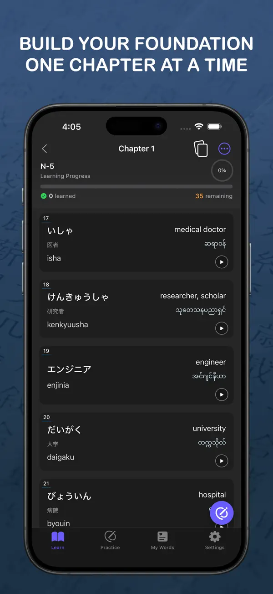
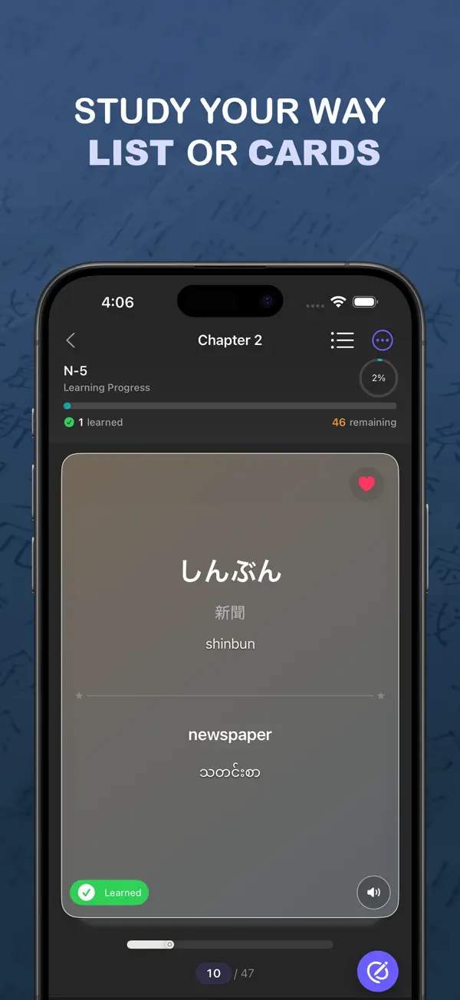
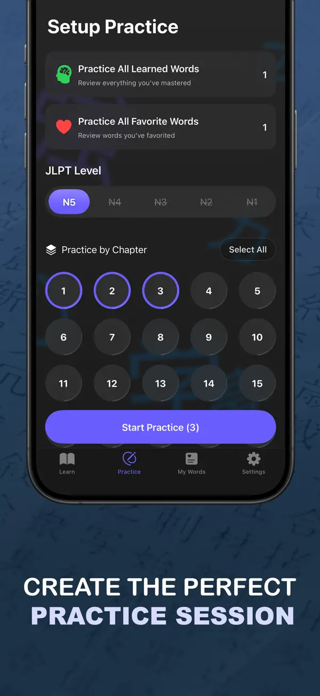
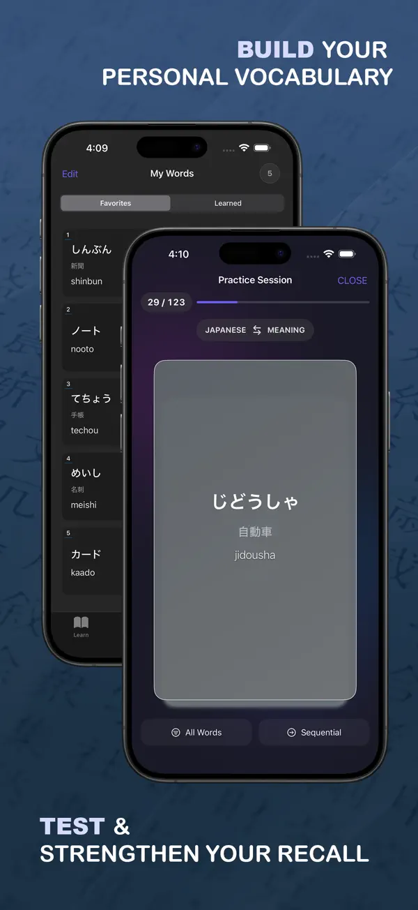
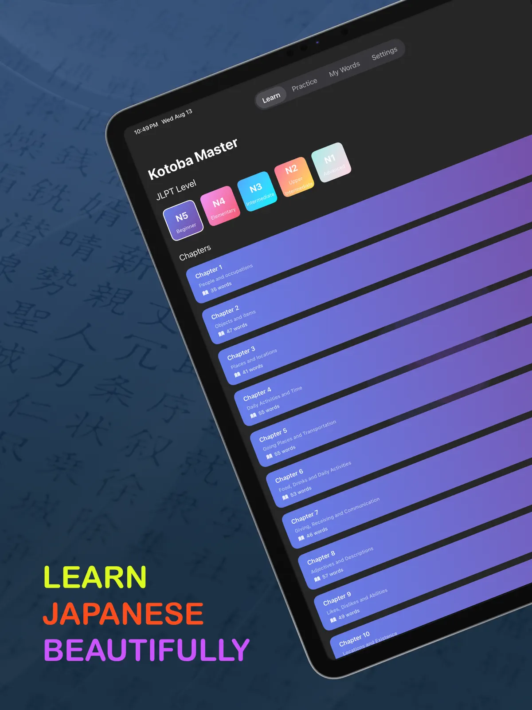

Learn
Japanese
beautifully
A clear, chapter-by-chapter path through JLPT vocabulary, starting with the complete N5 course. Study in a list or on flashcards, then build the perfect practice session.
Build your foundation,
one chapter at a time
Every N5 word in themed chapters, with kana, kanji, romaji and its meaning in English and Burmese.




Structured course
The complete N5 vocabulary in 25 themed chapters, with progress for each one.
List or cards
Scan a clean list for quick reference, or switch to gesture-driven flashcards to focus.
Custom practice
Pick chapters, shuffle, filter to learned or favorite words, and flip the direction to test recall.
My Words
Favorite words and mark what you've learned, then review your own lists any time.
English and Burmese
Every word with its kana, kanji and romaji, and its meaning in both English and Burmese.
Beautiful and focused
A calm interface with a stunning dark mode and delightful animations.
Every word in English
and မြန်မာ
Myanmar learners usually study Japanese through English. Kotoba Master shows both meanings side by side, so nothing gets lost in translation.

Built to scale to 10,000+ words
Native SwiftUI with an architecture designed for every JLPT level, not just the first.
MVVM + Services
Declarative SwiftUI views, Combine-driven view models, and a service layer of use cases and repositories that keeps business logic out of the UI.
A recycling card pager
The flashcard deck reuses a pool of three views, so memory stays flat whether a deck has twenty cards or thousands.
Level-scoped data
Vocabulary ships as one file per JLPT level for fast, low-memory loading, with an in-memory index for features that span levels.
IDs as a contract
Stable, self-describing word IDs. A validator in CI fails the build if a released ID is removed or reused, and renames migrate user progress on launch.
N5 today, N1 tomorrow
The complete N5 course is available now. The data model is ready for every level after it.
Questions
Is Kotoba Master free?
Yes, it's free to download and use, supported by ads.
Do I need an account?
No. There's nothing to sign up for; your favorites and learned words stay on your device.
Does it work offline?
Yes. All the vocabulary is inside the app, so you can study without a connection.
Which levels are included?
The complete JLPT N5 course today, in 25 chapters. N4 and the higher levels are on the way.
Is it on Android?
Kotoba Master is available for iPhone and iPad.